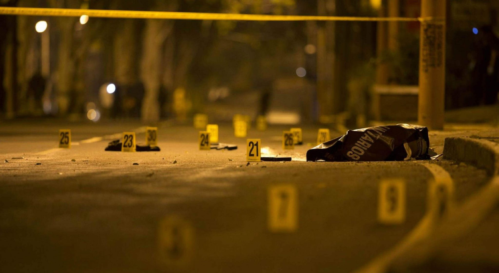

El FBI se centra en los criminales y las organizaciones más violentas que suponen una gran amenaza para la sociedad estadounidense. Los delitos violentos importantes, como los asesinatos en masa, la violencia de pandillas, los robos a mano armada y el tráfico de drogas, pueden paralizar las comunidades y poner a prueba los recursos de las fuerzas del orden estatales y locales hasta el límite. ejemplo: Pandillas, delitos violentos contra los niños, crimen en el país indígena, trata de personas, robo de banco y crimen de arte.
